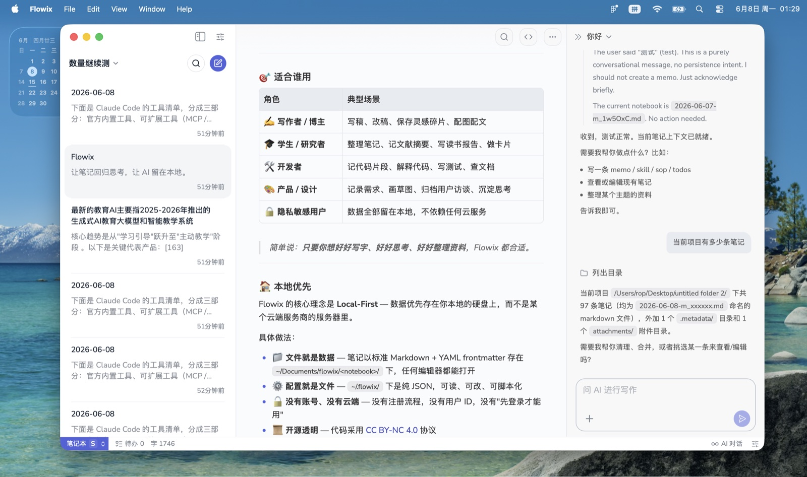
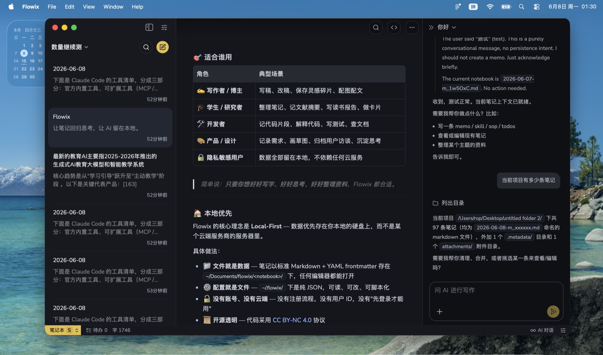
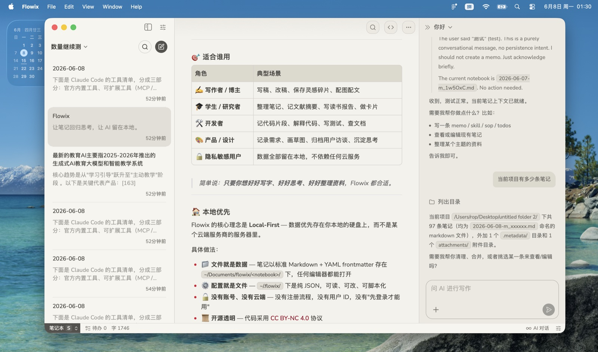

适合谁 · 不适合谁
适合你，如果…
- 想让 AI 接着你的笔记写，而不是从零开始
- 在 Markdown 里写 prompt、需求、规范、工作流
- 用笔记启动 Agent、Codex、Claude 让它们接着干
- 重视数据主权，文件能直接打开
不适合你，如果你需要…
- 只需要简单记事（系统便签就够了）
- 团队协作 / 多人同步
- 双链 / 知识图谱
- 离不开插件生态
AI 真的会干活
大多数笔记应用只挂个聊天侧栏——AI 看不到你的上下文，答完就忘。Flowix 的 AI 是真正的代理：它读你的笔记、写你的笔记、搜索文件、调用工具，每一步都看得见，也能随时叫停。
工具调用
读写笔记、搜索文件
可观测
实时看到代理的思考过程
流式响应
边想边写，不让你干等
模型自选
OpenAI · Anthropic · DeepSeek
四件用笔记能做的事
写 prompt
写在笔记里，发给 Agent、Codex、Claude 直接用。
列需求
需求清单就是 Markdown，AI 接着往下做。
编规范
规范写在笔记里，团队和 AI 都照着执行。
画工作流
把步骤画在笔记里，AI 按图执行。
数据留在你的硬盘上
一切都在本地。笔记是硬盘上的 Markdown + YAML 文件，纯文本，任何编辑器都能打开。配置是本地的 JSON 文件。整个数据目录就是一个普通文件夹，打包就能带走到任何机器。
写下的任何一篇笔记，都能直接交给 Codex、Claude 或别的 Agent 当上下文读。不用导出、不用转换、不用复制粘贴——因为就是纯文本。
没有云端。没有遥测。没有分析。AI 在本地读你的文件、写你的文件——只有你按了发送键的那一丁点 prompt 才会离开本机。源码以 CC BY-NC 4.0 协议开源——每一行都能读。
快速开始
git clone https://github.com/aicollaborate/flowix.git
cd flowix
npm install
npm run tauri dev环境要求：Node.js 20+、Rust 1.75+、macOS 14+ 或 Windows 10+。
生产构建：npm run tauri build